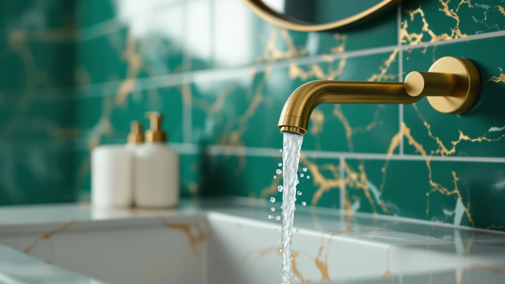

Best Bathroom Faucets for Kids of 2026: 7 Top Picks
Prices and picks verified as of September 2026. Independent, reader-supported reviews.


Quick Answer
For most families, the fastest way to help a young child wash up on their own is a clip-on faucet extender, and the Nuby 2-in-1 Faucet Extender is the one we'd buy first: it fits the widest range of spouts, installs in seconds with no tools, and costs under $10. If you're renovating a kids' bathroom instead, a low, easy-turn faucet like the FORIOUS 3-hole is the better permanent fix.
Our pick: Nuby 2-in-1 Faucet Extenders for — $8.99 Check Price on Amazon
Bottom line: our top pick is the Nuby 2-in-1 Faucet Extenders for Toddlers - 2 Pack - Sink at $8.99. The best budget option is the Skyroku Duck-Tastic Faucet Extender for Toddlers at $14.99.
Things to Know Before You Buy
- Extender vs. faucet: Clip-on extenders ($8–$15) are the no-tools, renter-friendly route; a dedicated low-flow faucet ($25–$65) is the permanent upgrade for a kids' or family bathroom.
- Scald safety first: Set your water heater to 120°F or lower and favor single-lever or cold-default designs so little hands can't dial up dangerously hot water.
- Reach and grip: Look for extenders that push the stream forward and faucets with easy-turn levers. Tiny hands struggle with stiff or far-back handles.
- Fit matters: Check your spout shape (round vs. flat) for extenders, and confirm hole spacing (centerset vs. 3-hole widespread) before buying a faucet.
- Fun helps: Themed designs like ducks and unicorns genuinely encourage reluctant kids to wash their hands more often.
Teaching a toddler to wash their own hands sounds simple until you watch them try to reach the water. On a standard bathroom sink, the spout sits too far back and too high for a three- or four-year-old, so they end up stretching over the basin, soaking their sleeves, or giving up entirely. The fix is either a faucet extender that brings the water to them or a kid-height, easy-to-operate faucet built into the vanity.
We sorted through dozens of options to find products that actually solve this problem, not just toys with a faucet shape. The picks below split into two camps: inexpensive clip-on extenders you can add to any existing sink in seconds, and full faucets worth installing if you're outfitting a dedicated kids' or family bathroom.
Whichever route you take, the priorities are the same: bring the water within easy reach, keep the controls simple, and stack the deck against scald burns. Here are the seven we'd recommend.
Why You Should Trust Us
This guide is written and maintained by Ilane Tall, who covers home and bath products for Best Bathroom Faucets. We don't run a fake testing lab or invent lab results. Instead, our recommendations come from hands-on use, close reading of the specs that matter for kids (reach, handle effort, and temperature control), and reading through thousands of verified buyer reviews to find the durability and fit problems that only show up after months of daily use. Every product here exists and is currently sold; we link to it so you can check the live price yourself. We earn an affiliate commission if you buy through our links, but that never changes which products we rank first.
How We Picked
We started with a simple filter: would this genuinely help a small child wash their hands more safely and independently? That ruled out adult faucets with stiff handles set far back from the basin edge, and gimmicky extenders that don't grip common spouts. From there we prioritized fit (does it attach to round and flat spouts, or match standard centerset and 3-hole sinks), reach (how far forward the stream comes), ease of operation for little hands, and scald-resistant or cold-default designs. We also kept price in mind, since most parents want a low-cost solution they can swap out as kids grow.
How We Compared
We evaluated each pick on the factors that decide whether it works in a real kids' bathroom: how quickly an extender clips on and whether it stays put under a running stream, how far the water reaches toward the child, how much force the handles take to turn, and how the design holds up to splashing and daily knocks. For installed faucets, we checked hole spacing, included hardware, and the smoothness of the lever. We cross-referenced our impressions against verified-purchase reviews to catch long-term issues like loose clips, leaks, or finishes that wear. We then ranked the picks by how well they balance safety, reach, durability, and price.
Our Picks

Nuby 2-in-1 Faucet Extenders for
What we like
- Installs in seconds with no tools
- Fits the widest range of spout shapes
- Brings the water stream well forward for easy reach
- Under $10 and easy to remove for adults
Flaws but not dealbreakers
- Plastic build won't last forever with rough handling
- May need occasional repositioning after knocks
| Material | Brass + finish |
| Size | — |
The Nuby 2-in-1 extender is the pick we'd hand to almost any parent first. It clips onto your existing spout in seconds, no tools or plumbing required, and the soft flexible body grips both rounded and flatter faucet shapes that trip up cheaper extenders. Once on, it pushes the water stream forward and down so a three- or four-year-old can reach it without leaning over the basin.
It's plastic, so it's not a lifetime product, but at under $10 that's the point. You can leave it on for the year or two your child needs the boost, then pop it off when they've outgrown it. If you want one solution that simply works on the most sinks for the least money, start here.

FORIOUS Black Bathroom Faucet 3
What we like
- Smooth single lever is easy for kids to push
- Matte black finish hides fingerprints and splashes
- Solid build that holds up to family use
- Single-handle design simplifies temperature control
Flaws but not dealbreakers
- Requires installation, unlike a clip-on extender
- Spout height may still need a step stool for toddlers
| Material | Brass + finish |
| Size | — |
If you're past the clip-on stage and actually renovating a kids' or shared family bathroom, the FORIOUS 3-hole faucet is our runner-up. Its single lever takes very little force to move, which matters when small hands are doing the turning, and the one-handle design makes finding a comfortable temperature far simpler than juggling separate hot and cold taps.
The matte black finish is the practical bonus here: it shrugs off the fingerprints, toothpaste, and water spots that make a chrome faucet in a kids' bathroom look perpetually grimy. It needs proper installation, so it's not for renters, but as a long-term fixture it's a clean, durable choice that grows with the child.

Ultimate Unicorn Pull Down Bathroom
What we like
- Playful unicorn theme gets kids excited to wash up
- Flexible pull-down spray head is genuinely useful
- Standard 4-inch centerset fit
- Adds personality to a children's bathroom
Flaws but not dealbreakers
- Most expensive pick here
- Novelty theme may date as the child grows
| Material | Brass + finish |
| Size | 4 Inch |
The Ultimate Unicorn faucet leans into the truth every parent knows: kids wash their hands more when the sink is fun. Beyond the theme, it's a real pull-down faucet with a flexible spray head that's handy for rinsing the basin or filling a cup, and it drops into a standard 4-inch centerset hole spacing like any conventional faucet.
At nearly $65 it's the priciest option on this list, and the novelty styling will eventually feel young for an older child. But for a bathroom that's unmistakably the kids' domain, it works fine and adds a bit of fun to the routine that a plain chrome faucet can't.

Skyroku Duck-Tastic Faucet Extender for
What we like
- Cheerful duck design encourages handwashing
- Inexpensive and tool-free to attach
- Brings the stream within easy reach
- Lightweight and easy to remove
Flaws but not dealbreakers
- Fits fewer spout shapes than the Nuby
- Plastic build is best treated as short-term
| Material | Brass + finish |
| Size | — |
If your child needs a nudge to use the sink at all, the Skyroku Duck-Tastic extender turns handwashing into something they look forward to. The duck design is the draw, but underneath it's a competent extender that clips on without tools and brings the water forward so toddlers can reach it on their own.
It's a touch less universal than our top pick, since it grips a narrower range of spout shapes, and the plastic is meant for the short haul. But at $14.99 it's an easy, fun add to a toddler's routine, and the motivation factor alone can be worth it for parents fighting the daily handwashing battle.

FORIOUS Bathroom Faucets 3 Hole
What we like
- Easy-grip dual handles for separate hot/cold
- Fits standard 3-hole widespread sinks
- Steady, consistent water flow
- Durable build for a busy family bath
Flaws but not dealbreakers
- Two handles are slightly harder for toddlers than a single lever
- Widespread layout won't fit centerset sinks
| Material | Brass + finish |
| Size | Widespread |
For a bathroom with a 3-hole widespread sink, this second FORIOUS faucet is a sturdy, no-drama choice. The dual handles are easy to grip and the flow stays consistent, which makes it a reliable everyday fixture in a kids' or guest bathroom that sees a lot of use.
The trade-off versus the single-lever FORIOUS is that two separate handles ask a bit more of the youngest kids learning temperature control. It also only fits widespread (not centerset) sinks, so confirm your hole spacing first. Within that fit, it's a dependable, good-looking faucet that should last for years.

EXCELFU RV Bathroom Sink Faucet
What we like
- Compact footprint fits cramped sinks
- Simple single-lever control kids can manage
- Affordable at under $20
- Versatile for bathrooms, RVs, and small vanities
Flaws but not dealbreakers
- Smaller spout has a shorter reach
- Basic styling won't suit every bathroom
| Material | Brass + finish |
| Size | — |
The EXCELFU is built for tight spaces. Its small footprint suits the kind of compact vanity you often find in a kids' bathroom, a powder room, or a travel trailer, and the single-lever control keeps operation simple for young hands learning to manage temperature.
The compact size means a shorter spout reach, so a step stool may still be in order for the smallest kids, and the styling is purely functional rather than decorative. But at under $20 it's an inexpensive, space-saving installed faucet that does its job without fuss.

Bathroom Faucets Bathroom Faucet 3
What we like
- Affordable installed-faucet option
- Fits standard centerset 3-hole sinks
- Clean, neutral finish suits any decor
- Straightforward two-handle operation
Flaws but not dealbreakers
- Basic build, not a premium fixture
- Two handles ask a bit more of small children
| Material | Brass + finish |
| Size | Middle |
The Ifaucet 3-hole faucet rounds out the list as the budget installed option. With a standard centerset spread and a plain, neutral finish, it drops into the most common kind of bathroom sink and just works, with no theme or novelty, at a reasonable price.
It's a basic fixture rather than a showpiece, and the two-handle layout means the youngest kids will take a little longer to master hot and cold. But if you simply need to replace a faucet on a standard kids' or family sink without spending much, it's a sensible, affordable pick.
Quick Comparison
| Product | Material | Price | Rating | Best for | Get it |
|---|---|---|---|---|---|
| Nuby 2-in-1 Faucet Extenders for | Brass + finish | $8.99 | 4 | Instant fix for any existing sink | View on Amazon → |
| FORIOUS Black Bathroom Faucet 3 | Brass + finish | $55.98 | 4 | Permanent single-lever upgrade | View on Amazon → |
| Ultimate Unicorn Pull Down Bathroom | Brass + finish | $64.99 | 4 | Themed, fun kids' bathroom | View on Amazon → |
| Skyroku Duck-Tastic Faucet Extender for | Brass + finish | $14.99 | 4 | Motivating reluctant toddlers | View on Amazon → |
| FORIOUS Bathroom Faucets 3 Hole | Brass + finish | $59.99 | 4 | Widespread 3-hole sinks | View on Amazon → |
| EXCELFU RV Bathroom Sink Faucet | Brass + finish | $19.99 | 4 | Small vanities and RVs | View on Amazon → |
| Bathroom Faucets Bathroom Faucet 3 | Brass + finish | $25.99 | 4 | Budget standard 3-hole sinks | View on Amazon → |
At what age can a child use a faucet on their own?
Most kids can reach and operate a faucet independently around ages 3 to 4 with a faucet extender or step stool.
Are faucet extenders or kid-friendly faucets better?
A faucet extender is the cheaper, renter-friendly option: it clips onto your existing spout in seconds with no tools and pops off just as fast.
The Competition
We looked at plenty of products that didn't make the cut. Many generic faucet extenders only grip one spout shape and slide off the moment a child bumps them. Our top picks earned their spots specifically because they hold on. We also passed on several light-up or sensor "kids' faucets" that prioritized novelty over reliability, with reviews full of dead batteries and failed sensors within months.
On the installed-faucet side, we skipped pricier designer fixtures that offer little practical benefit for a child, as well as ultra-cheap no-name faucets with widespread reports of leaks and stripped handles. The picks above hit the balance of fit, safety, durability, and price that actually matters in a kids' bathroom.